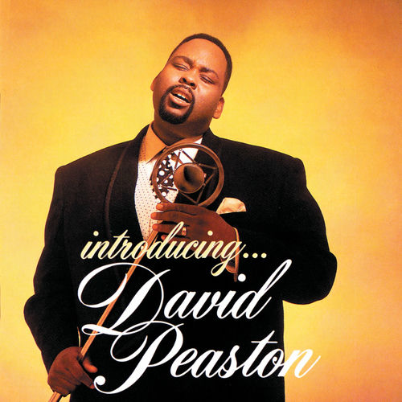

David Peaston
David Peaston was an American R&B and gospel singer who in 1990 won a Soul Train Music Award for Best R&B/Soul or Rap New Artist. He was mostly known for the singles "Two Wrongs " and "Can I?", the latter of which was originally recorded by Eddie Kendricks.
Complete Discography & Tracklists (3)